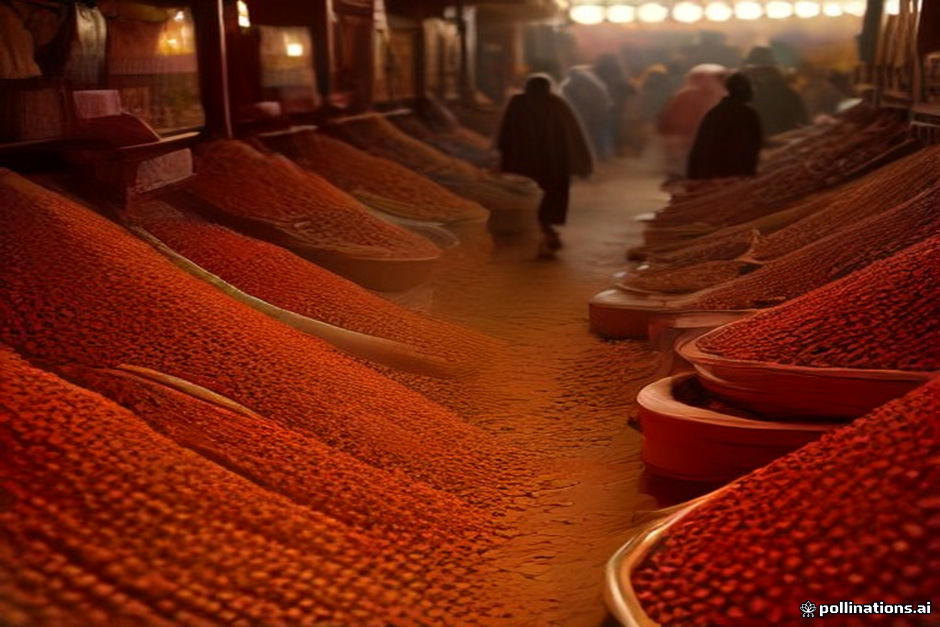

Rissani and Midelt offer rare glimpses into traditional trade along the transit routes between Marrakesh, Fes, and Erg Chebbi. Rissani’s market is where desert villagers trade livestock, spices, and date palm products, while Midelt serves as a High Atlas agricultural hub. However, independent travelers and tour clients often find these stops diverted into high-pressure carpet showrooms and fossil workshops.
Understanding how local commissions work isn't about blaming guides or drivers; it is about managing your time and expectations. If you want to see the authentic donkey parking area or the spice alleys without spending two hours drinking unwanted mint tea under purchase pressure, a few basic ground rules make all the difference.
Rissani Market vs Midelt: Timing and Focus
Rissani’s traditional souk operates strictly three days a week: Tuesday, Thursday, and Sunday. If you pass through on off-days, the covered market area is quiet and mostly consists of permanent lock-up stalls selling daily groceries. Midelt, sitting between the Middle and High Atlas mountains, acts as a daily transit town famous for apples, minerals, and regional hand-woven textiles.
While Rissani is authentic desert terrain near Merzouga, Midelt is usually a standard mid-way lunch stop on the long route from Fes. Both locations feature self-appointed local guides who offer brief walking tours that frequently terminate inside a specific carpet co-operative or mineral store.
How the Steering Mechanism Works
Most desert drivers and city guides earn fixed base rates, but high-margin items like hand-woven Berber carpets, vintage silver, and polished fossil slabs carry substantial referral commissions—often 10% to 20% of the total purchase price. A guide offering a 'free historical walk' through Rissani's ancient ksar often uses the stroll to build rapport before steering you into a family member's showroom.
This dynamic is common across tourism routes, but it consumes limited daylight hours. If your driver suggests an unplanned cultural detour off the main highway in Midelt or Erfoud, it is almost always a commercial stop. Knowing how to spot this lets you navigate your itinerary on your own terms. For broader context on route dynamics, review our notes on avoiding common tour scams.
Setting Clear Boundaries with Drivers and Guides
Clear communication must happen before you arrive at the town gates. Tell your driver at the start of the morning: 'We want to see the outdoor produce and livestock sections of Rissani for 45 minutes, but we will not be visiting carpet or souvenir shops today.'
If you decide to hire a local guide at the market entrance in Rissani, pay them their standard fee (typically 100 to 150 MAD) upfront and establish explicit limits. A direct statement such as 'No shops—only the spice market, donkey area, and main alleys' sets clear expectations immediately.
What to Actually See in Authentic Souks
In Rissani, skip the indoor gift shops and head directly to the market perimeter early in the day. The livestock ring hosts trade in sheep, goats, and donkeys brought in from surrounding desert villages. The date section showcases dozens of regional palm varieties, including Boufeggous and Majhoul, sold directly out of woven baskets.
- Rissani Donkey Parking: The central depot where desert residents tether their animals during market hours.
- Spice Alleys: Open sacks of fresh cumin, dried rosebuds from Kelaat M'Gouna, and local ras el hanout blends.
- Midelt Mineral Stalls: Raw quartz geodes and local mountain minerals sold along the main transit road.
- Oasis Date Market: Bulk date trading stalls, particularly active during the autumn harvest season.
Handling High-Pressure Sales Tactics Calmly
If you end up inside a rug showroom, remain calm and composed. Accepting tea is standard hospitality, but in commercial contexts, shopkeepers interpret sitting down for tea as an invitation to present their inventory. If you have no intention of buying, politely decline tea immediately.
Avoid asking 'How much is this?' out of casual curiosity. In Moroccan market culture, asking the price signals serious buying intent. If you want to leave, say *La, Shukran* ('No, thank you') calmly and walk out. You do not need to explain your budget, travel plans, or luggage constraints.
| Location | Best Market Days | Main Authentic Sights | Typical Commercial Pitch |
|---|---|---|---|
| Rissani Souk | Tuesday, Thursday, Sunday | Livestock ring, date sellers, donkey parking area | Ksar walk ending in multi-story rug room |
| Midelt Stop | Daily (Morning to early afternoon) | Apple orchards, mountain mineral displays | Artisanal weaving demo near lunch spots |
| Erfoud Center | Daily (Peak in October/November harvest) | Bulk date market, raw fossil quarries | Polished marble fossil factory showrooms |
| Zagora Market | Wednesday and Sunday | Grain trade, palm leaf basketry, local spices | Silver jewelry co-operative walkthroughs |

Illustration, not a photograph — for the real thing, you'll have to stand on the ridge yourself.
Quick answers
A few follow-up questions travelers ask about this.
Should I hire a local guide at the entrance of Rissani souk?
Hiring an official local guide for 100–150 MAD can keep informal hawkers away, provided you clearly instruct the guide before starting that you do not want to visit souvenir or rug shops.
Is it rude to decline mint tea inside a Moroccan carpet shop?
No. If you were brought into a showroom unexpectedly or do not intend to buy, declining tea politely with 'La, shukran' prevents misunderstandings about your intentions.
Can my desert tour driver force me to visit specific shops?
No. Your driver is there to execute your itinerary. If a commercial stop is suggested that you do not want, state clearly and calmly that you prefer to drive straight to your destination.
Planning your own route?
Tell us your dates and what matters to you — we'll answer with a straight recommendation, not a brochure.
Send an inquiry See the itineraries